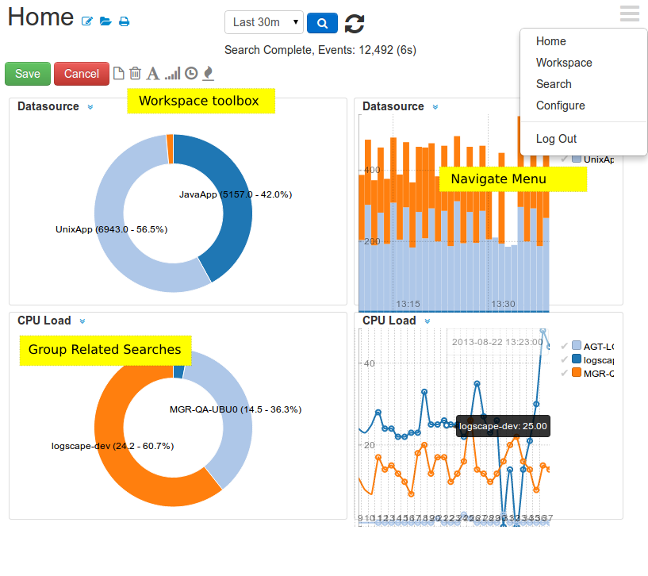

Overview
Installation
Common Deployment Scenarios
Contact
Installing the Manager
Duration: Just under 5 minutes Prerequisites: Make sure that you have Oracle Java 7 and above and that Java is accessible from your path
Note: Do not use OpenJDK. There are known performance problems with this JVM and Logscape may not run as expected. - Download Logscape-2.0.zip and unzip
- Copy your license to your Logscape location.
- Inside the Logscape parent folder type
logscape $> ./logscape.sh start - It will take about 30 seconds for the manager to fire up all the services. Point your browser to:
http://your-logscape-host:8080 - Once the Login appears. Use the following credentials for first time access to your system
User: admin Password: ll4bs The sysadmin account gives you access to all data on the system, including Logscape specific log data. The admin account gives you access to all data on the system but omits any Logscape specific data in your search results.
The sysadmin account gives you access to all data on the system, including Logscape specific log data. The admin account gives you access to all data on the system but omits any Logscape specific data in your search results. - Once you have logged in, you will land on the Home Page, which will look similar to this:
